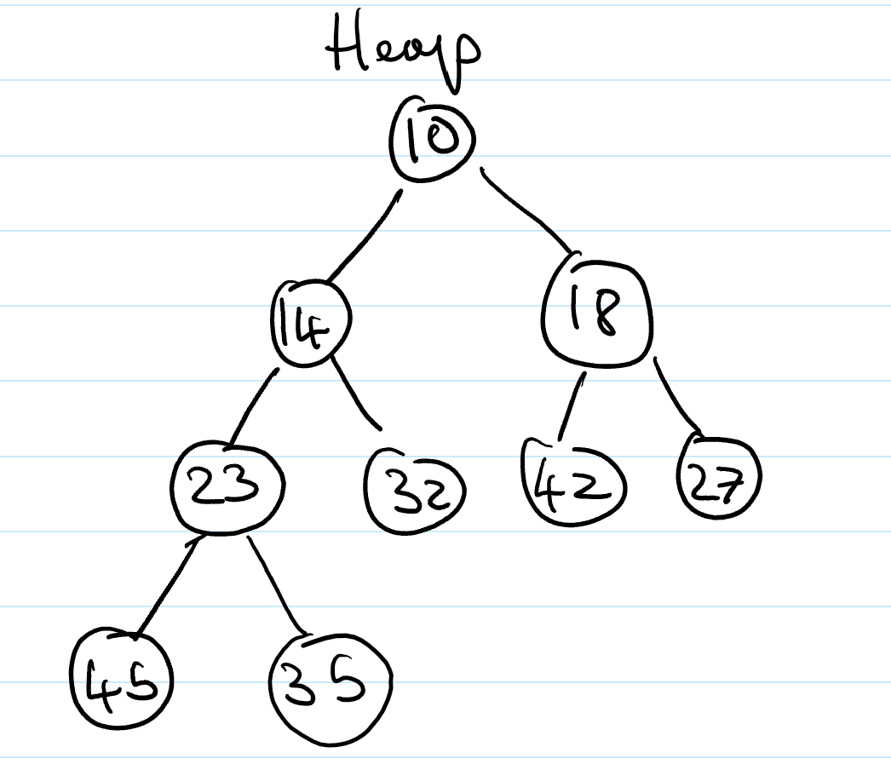
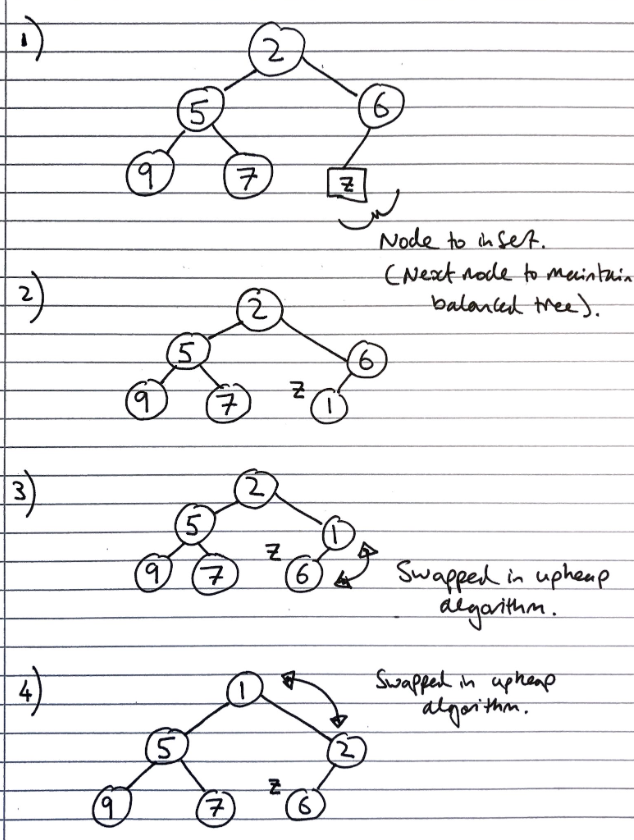
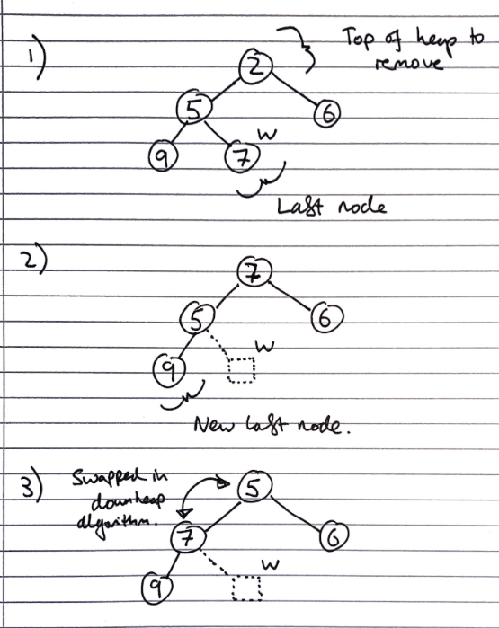

Priority queues (ADT)
Priority queues are (unsurprisingly) similar to queues, but items are sorted in order of a property “priority”, the assigned priorities specify which element leaves first (is dequeued). Unlike maps, multiple elements can have the same priority.
These priorities, usually called keys, must form a total order relation, for example \(x \leq y\). We often use comparators on keys to form this total order relation.
If two keys of the same priority are to be dequeued, the most common implementation is reverting to the standard queue property of removing the least recently inserted one
In some implementations, the key and the value are taken to be the same thing, so the total ordering is just based on the values, and no additional keys are required
| Fundamental Operations | Returned value | Effect |
|---|---|---|
enqueue(k,v) |
- | Insert an entry with key k and value v into the queue, where k determines its position in the queue |
dequeue() |
The element with the highest priority | Element with the highest priority is removed from the queue |
size() |
The size of priority queue | - |
isEmpty() |
Whether the priority queue is empty | - |
first() |
The element with the highest priority, but does not remove it | - |
Note. The names of these operations/methods can differ, it is important to understand their function and purpose to draw the link with concrete implementations.
Implementations
There are three common concrete implementations:
- Unsorted list based
- Sorted list
- Heap based
For both list based implementations, a positional/linked list should be used (for unsorted, doubly linked is needed), since we want to be able to grow the list, but don’t need to be able to index it
Unsorted list based
To enqueue an item, we just add it to the end of the list, in \(O(1)\) time.
To dequeue an item, we have to traverse the entire list to find the smallest item, taking \(O(n)\) time
Sorted list based
To enqueue an item, we have to traverse the list to find where to put it, taking \(O(n)\) time (but we normally wouldn’t need to traverse the entire list, unlike dequeuing in the unsorted implementation, which also must)
To dequeue an item, we just take it from the front of the list, in \(O(1)\) time
Heap based
This is covered in the section on heaps
Comparators
Comparators are used to “encapsulate[…] the action of comparing two objects from a given total order”
Data Structures and Algorithms in Java, Goodrich, Tamassia, Goldwassers
The comparator is an object external to the keys being compared, not a property of the keys. See the 118 notes for a more full description.
In this context, comparators would be used to provide the total ordering on objects inserted to the priority queue.
Sorting with list based priority queues
We can sort a set of items by enqueueing them one by one, using the priority as the total ordering to sort by, and then dequeuing them into a list will result in them being sorted.
When the unsorted concrete implementation is used, this encodes “selection sort”. The steps taken in the sort are:
- Enqueue all \(n\) elements, each taking \(O(1)\) time into the priority queue, taking \(O(n)\) time
- Dequeue all the elements into sorted order, with the total calls taking \(O(n) + O(n-1) + ... + O(1)\) which is \(O(n^2)\) time. Hence, the total time complexity is \(O(n^2)\)
When the sorted concrete implementation is used, this encodes “insertion sort”. The steps taken in the sort are:
- Enqueue \(n\) elements, with the total calls taking \(O(1) + O(2) + ... + O(n)\), which is \(O(n^2)\) time
- Dequeue all \(n\) items, each taking \(O(1)\), taking \(O(n)\) time. Hence, the total time complexity is \(O(n^2)\)
Heaps (ADT)
Heaps are essentially binary trees storing keys at their nodes and satisfying a set of “heap properties”.
As such, they are implemented in the same way as binary trees, discussed earlier, but with modified internal behaviour when inserting and deleting elements
Heap properties
The properties a binary tree must fulfil to be a heap are:
Heap-order. For every internal node other than the root (as it has no parent), the value of the node is greater than the value of the parent node
Complete binary tree. The height of the tree is minimal for the number of the nodes it contains, and is filled from “left to right”. This is formally defined as:
Let \(h\) be the height of the heap
Every layer of height \(i\) other than the lowest layer (\(i = h-1\)) has \(2^i\) nodes
In the lowest layer, the all internal nodes are to the left of external nodes
The last node of the heap is the rightmost node of maximum depth

Height of a Heap
A heap storing n keys has height = log2n.
Proof. Let \(h\) be the height of a heap storing \(n\) keys
Since there are \(2^i\) keys at depth \(i = 0, \ldots, h - 1\) and at least 1 key at depth \(h\), we have \(n \ge 1 +2 +4+\ldots+2^{h-1} + 1\)
Thus, \(n \ge 2^h \Rightarrow h \le log_{2}\ n\).
Heap methods
Inserting into a heap
First, the element is inserted to its temporary position of the rightmost node of maximum depth, so that it fills from left to right, with a running time of \(O(1)\) time, if a pointer to the position to insert is maintained
Then, the upheap algorithm is run to re-order the heap so that it fulfils the heap properties. This algorithm repeatedly swaps the inserted node with its parent, until either it reaches the root node, or it is larger than the parent node:
Let k <- the element to insert
While k is smaller than its parent, and k is not the root node
Swap the values of k and its parent node

Since the heap has a height of \(O(log_2\ n)\), performing a swap takes \(O(1)\) time, and the maximum number of swaps is the height of the heap, the upheap algorithm takes \(O(log_2\ n)\), time. In total, insertion takes \(O(log_2\ n)\) time.
Removal from a heap
The smallest item in the heap is the root node, so this value is stored and returned. However, we need to maintain heap properties as it is overwritten.
First, the value of the root node is overwritten with the value of the last node, and the last node is removed from the tree:
Then the downheap algorithm is run to re-order the heap so that it fulfils the heap properties:
Let p <- the root node
Let c <- the child of p with the minimal key (right if existent, otherwise left)
If the value of p is less than or equal to the value of c
Stop, since the heap order property is fulfilled
Else
Swap the values of p and c
Run the downheap algorithm again with the root node (p) now as the child node (c)

As with upheap, since the heap has a height of \(O(log_2\ n)\), the downheap algorithm takes \(O(log_2\ n)\) time.
Use in sorting
Since the heap can be used to implement priority queues, it can be used for sorting as with list based implementations, which resulted in selection and insertion sort. This is called a heap sort.
The steps taken in heap sort are:
- Enqueue \(n\) elements, with each enqueueing taking \(O(log n)\) time, so the total time is \(O(n \cdot log n)\) time
- Dequeue all \(n\) items, with each Dequeuing taking \(O(log n)\) time, so the total time is \(O(n \cdot log n)\) time
Hence, the overall time complexity is \(O(n \cdot log n)\)
This is one of the fastest classes of sorting algorithm, and is much more efficient than quadratic sorting algorithms like insertion or selection sort.
Concrete implementations
Any tree implementation can be used for a heap, as it merely modifies the way getters and setters work, not the internal data structures.
The main draw-back of array based implementations of space inefficiency for unbalanced trees is a non-issue for heaps, as they are implicitly balanced, so they are often used.
Array-based Heap Implementation
Given \(n\) elements, an element at position \(p\) is stored at index/cell \(f(p)\) where
- If \(p\) is the root, then \(f(p) = 0\) (index 0)
- If \(p\) is the left child of another position \(q\), \(f(p) = 2f(q) + 1\).
- For the right child this is, \(f(p) = 2f(q) + 2\).
The last node corresponds to the last occupied index. Insertion will insert a new element into the first free cell (unoccupied index) and remove_min will remove cell 0.
Usually we use an Array List so that the array can grow.
Building heaps in linear time
The number of operations for upheap and downheap on a item in the heap are related to its position. If an item is closer to the top, upheap will be quicker, since it has “less far to go”. Since there are more values on the bottom layer of the heap (\(2^n\)) , than the top layer of the heap (\(1\)), if we have to apply one of the algorithms to all of the items in the heap, we should prefer to use downheap, as it will result in fewer operations
Since we can represent a heap using an array-based implementation of a tree, we can take the unsorted array we want to turn into a heap, then use heap operations on the array directly to turn it into a valid heap expressed in the array-based implementation.
As discussed previously, we could go about this in two ways:
- Iterate from the first to the last index of the unsorted array, calling
upheapon each of the items. At each step, all the items preceding the current index in the array will form a valid heap, so after callingupheapon every item, the array is a valid heap - Iterate from the last to the first index of the unsorted array, calling
downheapon each of the items
Let H <- the unsorted array to convert to a heap
For each item in the array in reverse order
Call downheap on the item
There is a proof that this is actually \(O(n)\) (source #1, source #2), but it’s a bit tricky to explain here, so is omitted
A final point is despite the fact we can build a heap in \(O(n)\) time, we cannot use this to sort the array in linear time, as removing from the top of the heap still takes \(O(n\ log\ n)\) time